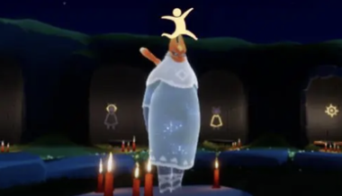
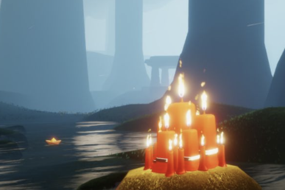

-

暴风眼直飞
non-stop flight to Eye of Eden直冲云霄，破茧重生
Rise to the sky, emerge from the cocoon -
遁地
Chibi fall地图之外，探索未知
Beyond the map, explore the unknown -
水试炼
Trial of water脚踏坚冰，跨越蔚水。
Stepping on solid ice, crossing azure waters. -
火试炼
Trial of fire规避黑暗中的危险，小心前进。
Avoid danger in the dark and proceed with caution. -
土试炼
Trial of earth迷宫之中，探明方向
In the maze, find the direction -
风试炼
Trial of air随风而行，步履薄冰
Walk with the wind, walk on thin ice -
光翼位置
Wing of light收集光翼，翱翔天际
Gather wings of light and soar in the sky -
 旅行先祖位置
Travelling spirit寻找先祖，重拾光明
Find the spirits, find the light again -
 收集烛火
Candles run星星烛火，点亮天空
Stars candle fire, light up the sky -
训龙
Training black dragon盘旋直上，惊心动魄
It spirals up. It's thrilling
在天空王国挑战自我
Challenge yourself in the Sky
或许有一些小技巧帮助你更好的旅行，当然你也可以尝试高难度的飞行技术，开启你的挑战吧吧！
There may be some tips to help you travel better, of course, you can also try difficult flying techniques, start your challenge!